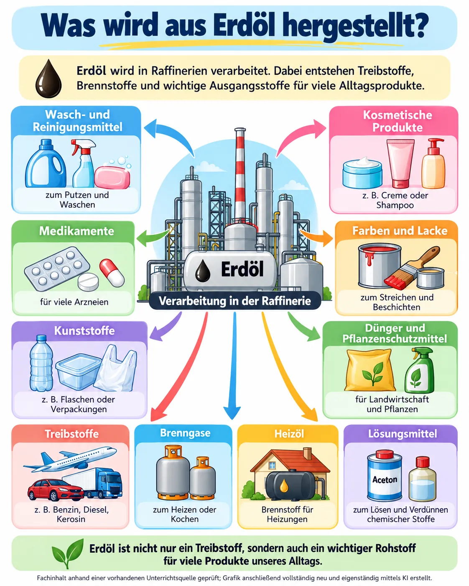

Erdöl – ein ganz besonderes Gemisch
Frisch gefördertes Erdöl () sieht wenig spannend aus: eine dunkelbraune bis schwarze, zähe Flüssigkeit, die unangenehm riecht. Und doch steckt es in Benzin, Heizöl, Kunststoffen und vielen anderen Dingen deines Alltags.
Erdöl ist kein einheitlicher Stoff, sondern ein aus sehr vielen . Um Benzin oder Heizöl zu gewinnen, muss man das Gemisch zuerst auftrennen.
Trennen durch Destillation. Bei der erhitzt man ein Gemisch, bis ein Bestandteil . Der Dampf wird weggeleitet und abgekühlt. Dabei er, er wird also wieder flüssig.
Das klappt, weil jeder Stoff bei einer anderen Temperatur siedet. Diese Temperatur heißt . Wasser siedet zum Beispiel bei 100 °C, Tinte verdampft dabei nicht.
Im Film aus der „Bibliothek der Sachgeschichten“ wird zuerst gefärbtes Wasser destilliert und dann Erdöl ganz vorsichtig erwärmt. Der Film hält an einigen Stellen an. Beantworte dann die Frage unter dem Film – erst danach geht es weiter.
Beantworte die Frage unter dem Film.
Die Knöpfe mit ❓ springen direkt zu einem Film-Stopp.
MERKE
- Erdöl ist ein Stoffgemisch aus vielen verschiedenen Kohlenwasserstoffen.
- Bei der Destillation wird ein Gemisch erhitzt. Ein Bestandteil verdampft, der Dampf wird abgekühlt und kondensiert wieder.
- So lassen sich Stoffe mit unterschiedlichen Siedetemperaturen trennen.
Erkläre in eigenen Worten ✨ KI prüft
Schreibe ganze Sätze oder Stichpunkte. Die KI achtet nur auf den Inhalt, nicht auf die Rechtschreibung. Danach kannst du die Musterlösung ansehen.
Modellversuch: Erdöl in Fraktionen trennen
Warum ein Ersatzgemisch? Echtes Erdöl enthält Stoffe, die der Gesundheit schaden. Im Unterricht nimmt man deshalb ein Gemisch, das sich ähnlich verhält, zum Beispiel aus Reinigungsbenzin, Petroleum und Nähmaschinenöl, oder „künstliches Rohöl“ aus dem Fachhandel.
Was man beobachtet. Die Bestandteile des Erdöls haben unterschiedliche Siedetemperaturen. Beim Erhitzen verdampfen sie deshalb nacheinander. Viele Siedetemperaturen liegen aber sehr nah beieinander. Darum erhält man keine , sondern Gemische aus Stoffen mit ähnlicher Siedetemperatur. Man nennt sie , das Verfahren .
Aufbau: In einen mit seitlichem Rohr kommen etwa 50 ml des Ersatzgemischs und einige . Ein Stopfen mit Thermometer verschließt den Kolben. Ein elektrischer erwärmt das Gemisch.
Ablauf: Die Dämpfe strömen durch das seitliche Rohr in ein Reagenzglas, das in kaltem Wasser steht. Dort werden sie wieder flüssig. Immer wenn die Temperatur um etwa 50 °C gestiegen ist, wird das Reagenzglas gewechselt und mit einem Stopfen verschlossen.
⚠️ Diesen Versuch führt nur die Lehrkraft durch: Schutzbrille, Abzug, keine offene Flamme.
Tippe auf „Weiter erhitzen“. Die Lehrkraft erhöht die Temperatur jeweils um etwa 50 °C.
MERKE
- Die Bestandteile des Erdöls haben unterschiedliche Siedetemperaturen und verdampfen deshalb nacheinander.
- Weil die Siedetemperaturen nah beieinander liegen, erhält man keine Reinstoffe, sondern Fraktionen: Gemische aus Stoffen mit ähnlicher Siedetemperatur.
- Das Verfahren heißt fraktionierte Destillation.
Werte den Versuch aus ✨ KI prüft
Im Destillationsturm der Raffinerie
Der Weg in die Raffinerie. Nach der Förderung wird das Erdöl von Sand und Wasser befreit. Pipelines bringen es in eine . Dort erhitzt ein das Rohöl auf etwa 350 °C. Das heiße Gemisch aus Dampf und Flüssigkeit strömt unten in einen etwa 50 Meter hohen .
Oben kühl, unten heiß. Im Turm liegen viele übereinander. Ihre Öffnungen tragen glockenförmige Deckel. Unten ist es am heißesten, nach oben wird es immer kühler. Die Dämpfe steigen auf, kühlen ab und kondensieren. Jeder Bestandteil wird in der Höhe flüssig, die zu seiner Siedetemperatur passt. Von den Zwischenböden werden die Fraktionen abgeleitet und in Tanks gefüllt.
Beobachte die Dämpfe: Wo wird welcher Bestandteil flüssig? Tippe dann rechts auf die fünf Kästen.
![Infografik Fraktionierte Destillation von Erdöl: 1 Das Rohöl wird in einem Ofen stark erhitzt. 2 Das heiße Rohöl mit etwa 350 °C strömt in den Destillationsturm. Im Turm sinkt die Temperatur nach oben, oben ist es kühler als 30 °C. Benzine kondensieren bei etwa 100 °C, Petroleum und Kerosin bei etwa 200 °C, Diesel und leichtes Heizöl bei etwa 300 °C. Der Rückstand mit Siedetemperaturen über 300 °C verlässt den Turm unten und wird weiterverarbeitet. Unten drei Kästen: Temperaturverlauf im Turm, Trennung durch Kondensation, Ergebnis: Aus einem Stoffgemisch entstehen mehrere nützliche Produkte.](assets/modul4/destillation-erdoel.webp)
KI-Grafik: Fachinhalt anhand einer vorhandenen Unterrichtsquelle geprüft, Grafik anschließend vollständig neu und eigenständig mittels KI erstellt.
MERKE
- Erdöl ist ein Gemisch aus Stoffen mit unterschiedlichen Siedetemperaturen.
- In der Raffinerie wird es im Destillationsturm in Fraktionen getrennt: Gase ganz oben, darunter Benzin, Kerosin sowie Diesel und leichtes Heizöl, unten der Rückstand.
- Im Destillationsturm nimmt die Temperatur von unten nach oben ab.
So funktioniert die fraktionierte Destillation. Fülle die Lücken.
Tippe zuerst auf eine Lücke, dann auf das passende Wort. Zwei Wörter bleiben übrig.
Vom Bohrloch in den Tank
Erkläre in eigenen Worten ✨ KI prüft
Was bleibt übrig? Destillation bei vermindertem Druck
Der Rückstand. Ein Teil des Rohöls verdampft auch bei 350 °C nicht. Er sammelt sich am Boden des Turms als . Einfach stärker heizen geht nicht: Bei noch höheren Temperaturen würden sich diese Stoffe .
Der Trick mit dem Druck. Je geringer der Druck, desto niedriger ist die Siedetemperatur eines Stoffes. Das kennen Bergsteiger: Auf der Zugspitze kocht Wasser schon bei etwa 90 °C. Deshalb destilliert man den Rückstand in einem zweiten Turm bei . Dann genügen etwa 200 bis 250 °C.
So gewinnt man und . Was selbst dann nicht verdampft, ist fest: . Daraus wird Asphalt für den Straßenbau.
Bei normalem Luftdruck siedet der Rückstand erst weit über 350 °C – so heiß darf er nicht werden. Schiebe den Regler und verringere den Druck.
MERKE
- Der Rückstand würde sich bei Temperaturen über 350 °C zersetzen.
- Bei vermindertem Druck sinken die Siedetemperaturen. Darum destilliert man den Rückstand bei vermindertem Druck und etwa 250 °C.
- Dabei entstehen schweres Heizöl und Schmieröle. Übrig bleibt Bitumen, aus dem Asphalt für Straßen wird.
Erkläre in eigenen Worten ✨ KI prüft
Gasförmig, flüssig, fest: Eigenschaften der Fraktionen
Gasförmig. Propan und Butan sieden so niedrig, dass sie bei der Destillation als Erstes entweichen. Unter Druck werden sie leicht flüssig. Deshalb heißen sie . Butan steckt in Feuerzeugen und kleinen Campingkartuschen, Propan in großen Gasflaschen.
Flüssig. Benzin für Autos, zum Entfernen von Fett, Kerosin für Flugzeuge, Dieselöl, schweres Heizöl für Schiffe und Schmieröl für Maschinen.
Fest. Was auch bei vermindertem Druck nicht verdampft, heißt Bitumen oder Teer. Es wird als Straßenbelag und als Schutzanstrich gegen Wasser verwendet.
Die Faustregel. Je größer die einer Fraktion sind, desto höher ist ihre Siedetemperatur und desto ist sie.
Kleine Moleküle verdampfen leicht. Über Benzin entsteht deshalb schon bei Zimmertemperatur so viel Dampf, dass er sich anzünden lässt. Große Moleküle muss man erst erwärmen, bevor genug brennbarer Dampf entsteht.
⚠️ Lehrerversuch. Tippe auf „Anzünden versuchen“: Der brennende Holzspan wandert über alle vier Schälchen.
In jedem Reagenzglas liegt oben eine gleich große Metallkugel. Was vermutest du: Wo sinkt sie am schnellsten?
MERKE
- Die Bestandteile des Erdöls lassen sich in gasförmige, flüssige und feste Stoffe einteilen.
- Je größer die Moleküle, desto höher die Siedetemperatur und desto zähflüssiger der Stoff.
- Fraktionen mit kleinen Molekülen verdampfen leicht und lassen sich leicht entzünden.
Gasförmig, flüssig oder fest?
Tippe eine Karte an und dann das passende Feld.
Ordne von den kleinsten zu den größten Molekülen
Werte die beiden Versuche aus ✨ KI prüft
Was wird aus Erdöl hergestellt?

KI-Grafik: Fachinhalt anhand einer vorhandenen Unterrichtsquelle geprüft, Grafik anschließend vollständig neu und eigenständig mittels KI erstellt.
Verbrannt … Der größte Teil des Erdöls wird verbrannt: als Benzin, Diesel und Kerosin in Motoren, als Heizöl in Heizungen und als Flüssiggas in Kochern und Feuerzeugen.
… oder verarbeitet. Ein kleinerer, aber sehr wichtiger Teil ist Rohstoff für die . Daraus entstehen , Medikamente, Kosmetik, Wasch- und Reinigungsmittel, Farben und Lacke, Dünge- und Pflanzenschutzmittel sowie .
Der Film am Anfang hat es schon angedeutet: Ohne Erdöl gäbe es viele Spielsachen, Kleidungsstücke und Verpackungen nicht in der heutigen Form.
Was verschwindet, wenn es kein Erdöl mehr gibt?
Tippe alle Dinge an, die (ganz oder teilweise) aus Erdöl hergestellt werden. Drücke dann auf den Knopf.
Verbrannt oder verarbeitet?
Wird das Erdölprodukt als Energieträger verbrannt oder ist Erdöl hier Rohstoff für ein Produkt?
MERKE
- Aus Erdöl gewinnt man Treibstoffe, Heizöl und Brenngase.
- Außerdem ist Erdöl Rohstoff für Kunststoffe, Medikamente, Kosmetik, Wasch- und Reinigungsmittel, Farben, Dünger und Lösungsmittel.
- Ein Alltag ganz ohne Erdöl ist heute kaum vorstellbar. Das macht es so schwer, Erdöl zu ersetzen.
Erdöl im Alltag ✨ KI prüft
Training für die Probe
Löse das Kreuzworträtsel
Tippe in ein Kästchen und schreibe. Tippst du ein Kästchen zweimal an, wechselt die Richtung. Ö und Ü bekommen ein eigenes Kästchen.
Röhrenofen und Destillationsturm
Kreuze an
Erkläre in eigenen Worten ✨ KI prüft
Schreibe ganze Sätze oder Stichpunkte. Die KI achtet nur auf den Inhalt, nicht auf die Rechtschreibung. Danach kannst du die Musterlösung ansehen.
Raffinerie-Profi-Check
Wortspeicher
Alle Fachbegriffe dieses Moduls auf einen Blick.
Wie geht es weiter?
Wenn Erdöl, Kohle und Erdgas verbrannt werden, gelangt Kohlenstoff in die Luft, der Millionen Jahre im Boden lag. In Modul 5 verfolgst du den Weg des Kohlenstoffs und erfährst, was das mit dem Klima zu tun hat.